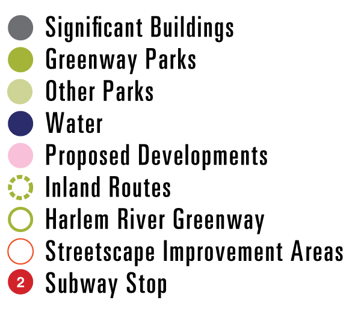

Bronx, Meet Your Waterfront Plan
Creating new public space & a greenway for residents of the South Bronx
The Bronx, Meet Your Waterfront Plan presents strategies that reconnect the river to its adjacent communities. After years of industrial use, pollution and heavy infrastructure along the Harlem River have rendered the 8-mile stretch of waterfront mostly inaccessible to the bronx community.
The City has already begun to bring attention to the Harlem River through the recently completed Mill Pond Park and upcoming renovation of the High Bridge. This project seeks to capitalize on these major investments by creating a Harlem River Greenway that connects the wide range of experiences of the Harlem River waterfront, from manicured to natural landscapes and from industrial to residential neighborhoods. The Greenway winds its way along the Harlem River through the Highbridge and Mott Haven neighborhoods.
The Site & Environmental Systems practicum is working in New York City in collaboration with the Bronx Borough President’s Office and the NYC Department of City Planning to develop a comprehensive and integrated waterfront access plan along the eastern banks of the Harlem River. The plan encompasses the reuse of former contaminated industrial sites, determining appropriate uses of these sites, connecting residential communities to the waterfront currently cut off, and creating community envisioning planning toolkit.
See the project report
Transect Studies
Transect studies of infrastructure and access around three key bridge interchanges on the Bronx Harlem River waterfront.
Community Engagement
We were able to present our ideas on multiple occaisions to members of the Harlem River Working Group at the Highbridge Community Life Center.
Residents gave feedback on the proposals and did a mental mapping exercise with us.
In May of 2011, we presented final proposals to a room full of interested community members at the Bronx Borough Courthouse & the NYC Department of City Planning.
Master Plan
Our masterplan for the Harlem River Greenway presents a vision for how the four overarching themes – eco-puncture, temporary activation, waterfront access, and infrastructure adaptation – might be integrated into specific contexts along the waterfront.
Through targeted investments in particular locations, the Bronx will see an expansion of and compliment to the existing open spaces and activity centers along the Harlem River in the Bronx.

A non-traditional waterfront greenway with new off-street pedestrian paths and improved streetscapes will connect the waterfront to inland destinations and to the surrounding neighborhoods. This series of connected but diverse waterfront spaces responds to and celebrates the infrastructure, culture, and history of the area, and provides a unique waterfront experience for neighborhood residents and visitors alike.

Site Design for the High Bridge
The High Bridge, New York City’s oldest surviving bridge, is set to reopen to pedestrians in 2013. This is an opportunity to make stronger connections to the water’s edge.
Already there are plans developing to reconstruct the crumbling High Bridge Staircase and to develop a waterfront promenade. Our proposals use these developments as a catalyst to create a Harlem River Greenway between Roberto Clemente State Park and Macombs Dam Bridge and to strengthen upland connections to the Highbridge residential neighborhood.
Pedestrians who reach the bottom of the High Bridge stairs are currently greeted by spaces in habited by fast-moving traffic at all hours of the day. Proposed changes will make this area a more appropriate entrance to a water front park.
The proposed gateway at 170th Street will extend the visibility of the High Bridge to visitors coming from the Grand Concourse or subway stations.
A dramatic elevation change separates the High Bridge entrance from the waterfront. Inviting and clearly marked paths will make this transition easier to navigate.